RC_Telemetry — Sistema GPS per Telemetria & Cronometraggio per RC
RC_Telemetry — GPS System for RC Telemetry & Lap Timing
Cronometraggio in tempo reale con tempi sul giro, intertempi e velocità massima per ogni giro. Visualizzazione diretta su cellulare e client PC avanzato.
Real-time lap timing with split times and maximum speed per lap. Direct visualization on smartphone and advanced PC client.
Cronometraggio e telemetria in tempo reale
Real-time telemetry & lap timing
Il sistema GPS fornisce: tempi sul giro, tempi intermedi (split), velocità massima registrata per ogni giro. Tutto aggiornato in tempo reale e visibile direttamente dallo smartphone tramite interfaccia web ottimizzata per mobile.
The GPS system provides: lap times, split times, and maximum speed recorded per lap. All updated in real time and directly viewable from your smartphone via a mobile-optimized web interface.
-
⏱Cronometraggio in tempo reale Real-time lap timingRilevamento passaggi, calcolo tempi sul giro e intertempi con latenza minima.Lap detection, lap and split time calculation with minimal latency.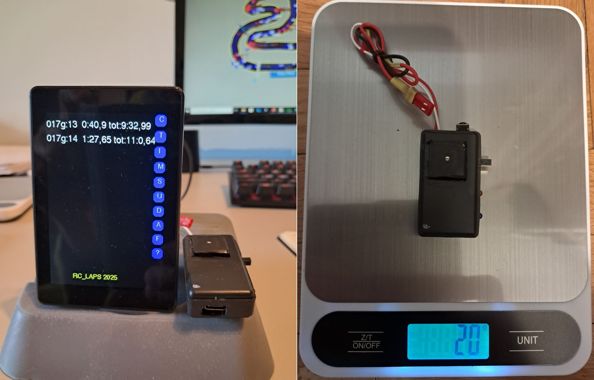 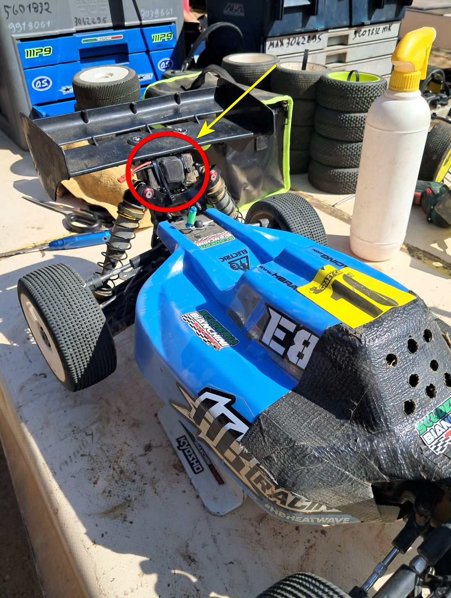
-
⚡Intertempi e Velocità massima Split times & Top speedRegistrazione degli intertempi e velocità top di ogni giro.Recording of split times and top speed for each lap.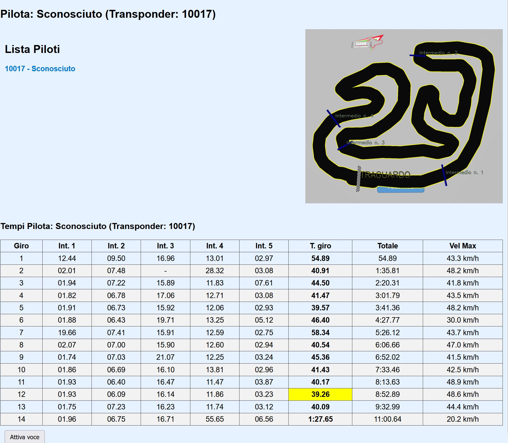 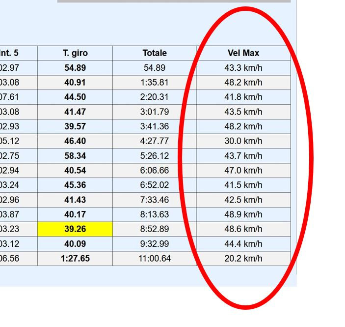
-
📱Visualizzazione Mobile Mobile VisualizationInterfaccia web responsive: segui i tempi e la velocità direttamente dal cellulare senza installare app.Responsive web interface: follow lap times and speed directly on your phone without installing apps.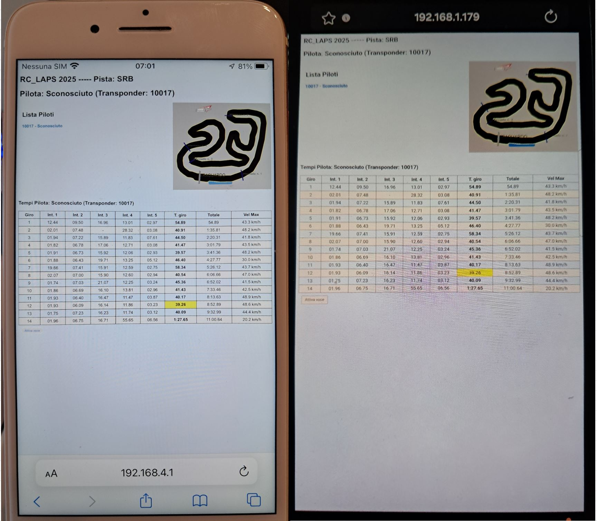 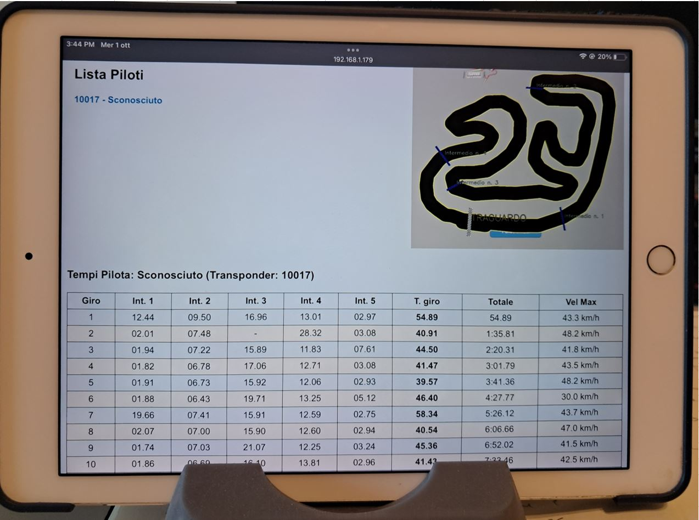
-
🖥️Client PC per analisi PC Client for analysisClient desktop per disegnare tracciati, posizionare traguardi/intertempi e analizzare i dati con percorso su tracciato, grafici di velocità e frenata.Desktop client to draw tracks, set start/finish & split lines, and analyze data with track maps, speed and braking graphs.
 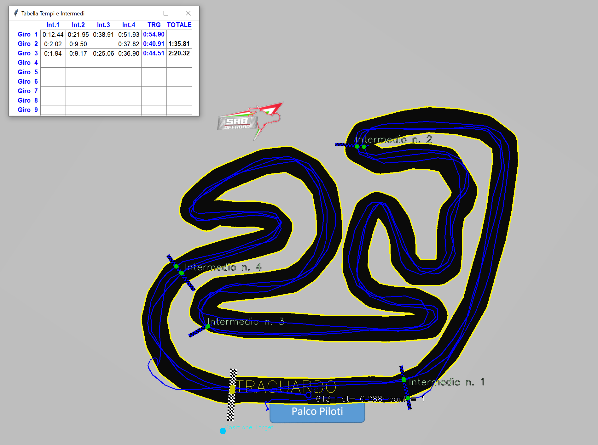
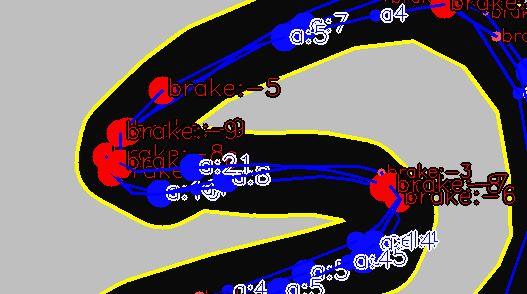
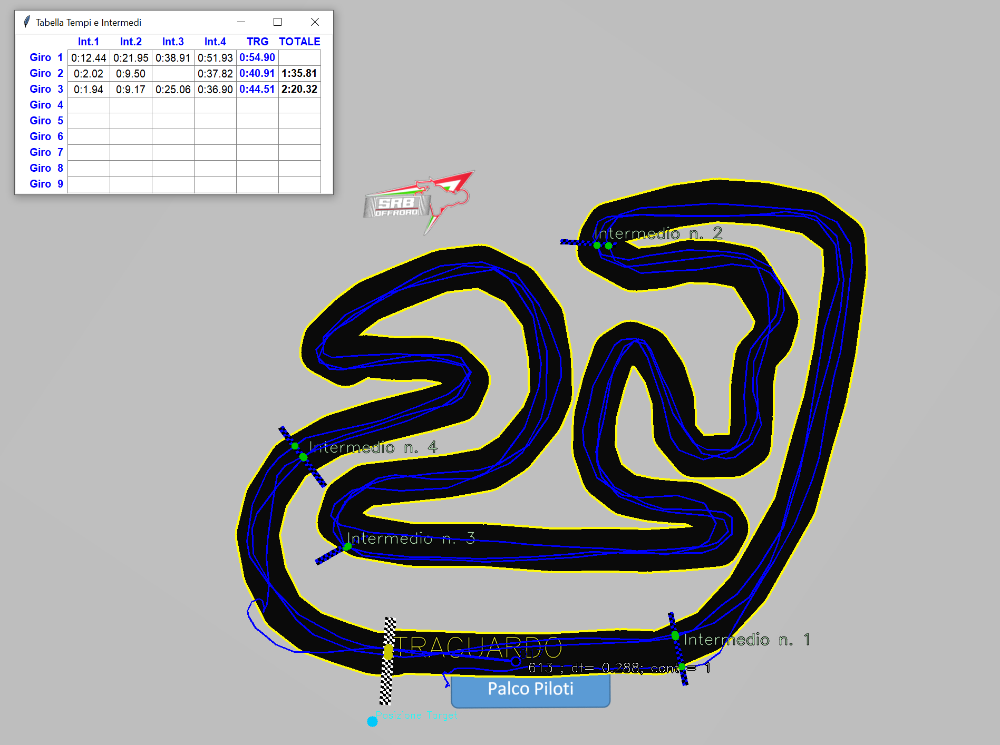
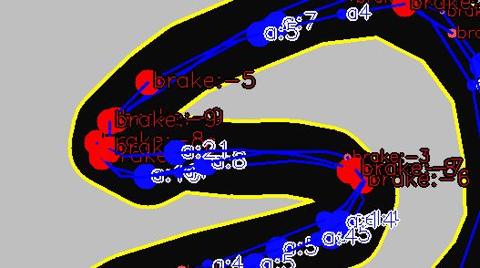
-
📊Elaborazione dati Data processingVisualizzazione percorso con grafici di velocità, decelerazione/frenata, comparazione giri e registrazioni complete.Track visualization with speed, braking/deceleration graphs, lap comparison and full session replay.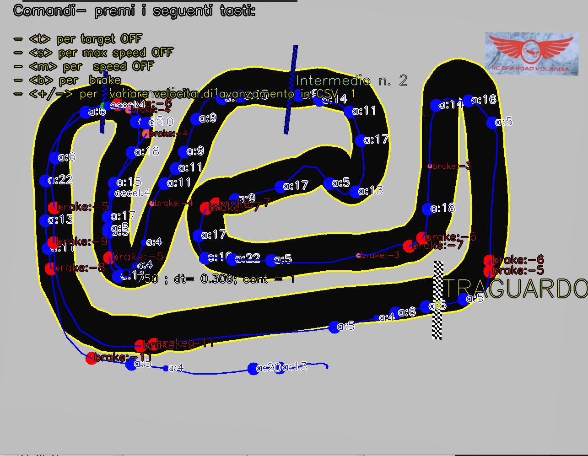 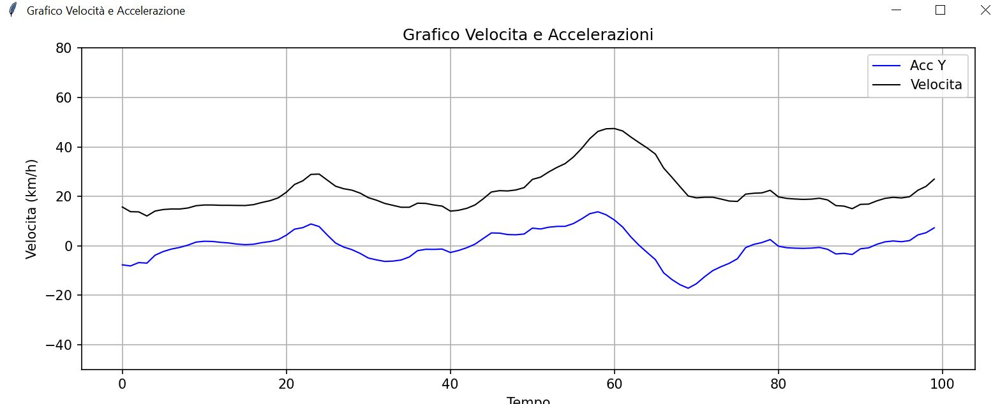
-
👥Multipilota & Database tracciati Multi-driver & Track databaseSupporto per più piloti simultanei; database tracciati aggiornabile per memorizzare configurazioni, traguardi e reference line.Support for multiple drivers simultaneously; updatable track database to save layouts, splits, and reference lines.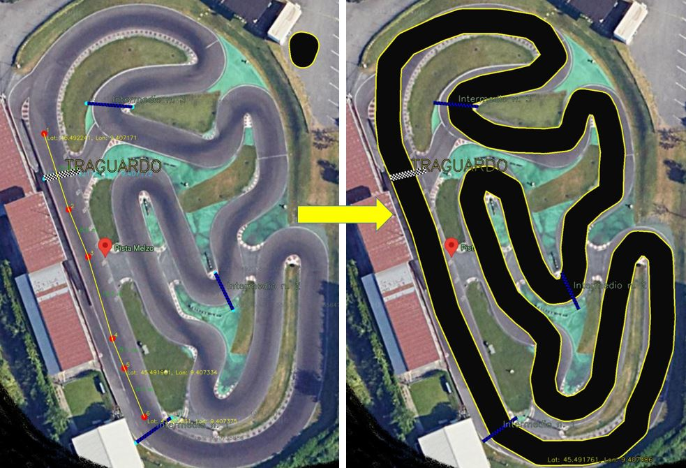 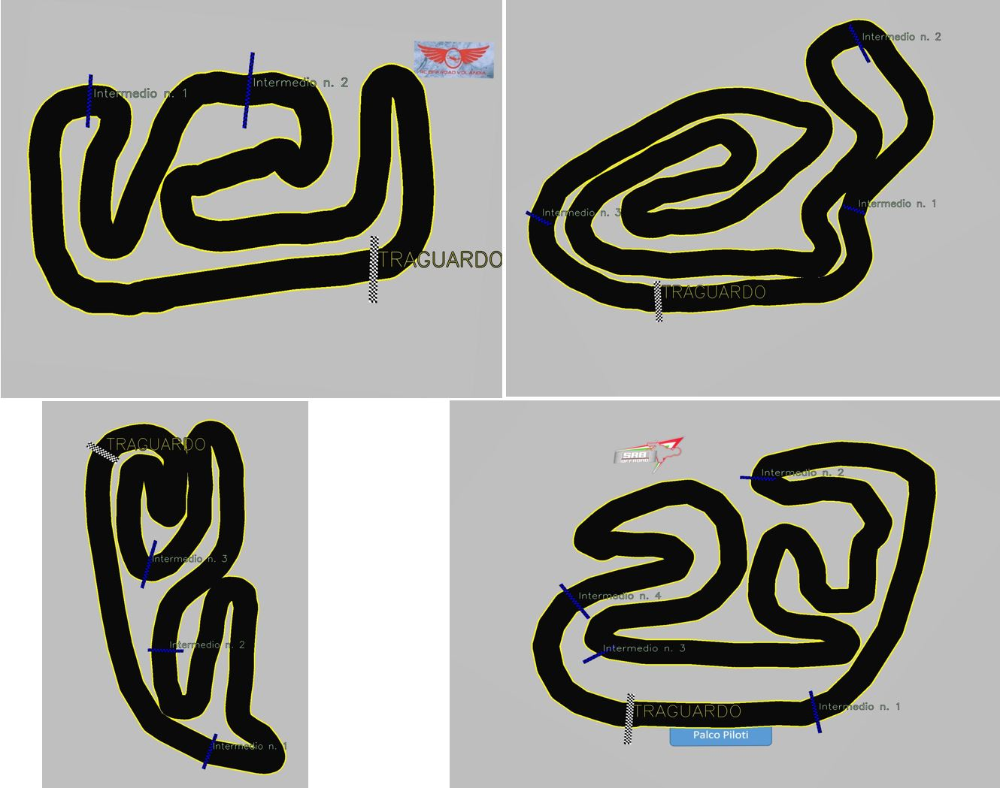
Galleria foto
Photo gallery
La seguente sezione è in aggiornamento continuo...
This section is continuously updated...
Contatto:
Contact:
Per maggiori informazioni:
For more information: